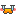
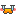

2014/0209Sunたまごサンドの鏡
17歳、そして今年で18歳！
一瞬一瞬を大切に精一杯
生きていきたいなと思いました
夢はたくさんあるけどまずは
身近な事から頑張っていきたいです
こんばんは
堀未央奈です

いえーい(^.^)たこ焼き(^.^)
そして
NOGIBINGO2を見てくださった
皆さんありがとうございます♩
2期生VS1期生対決のリベンジを
させていただきました！
ここからはネタバレなので
まだ見ていない方は飛ばして下さい

キリッ
いつもは楽屋でふざけてる
ひなみおだけど全力で頑張りました！
だけど...だけど...ごめんなさい(笑)
詳しくは後ほど
対決の時の2期生ジャージが
赤色ｘピンク色で派手でしたね〜
そして三輪車レースの件は
本当にすみませんでした...>_<...
小さい頃から二輪車派だったのと
プレッシャーや焦りもあって
ぐるぐるしてしまいました
力が入っちゃってかりんに
落ち着いてって言われた(笑)
みんな本当にごめんなさい...>_<...
かりん、里沙子、絢音、蘭世は
素晴らしい走りでした！
みんな三輪車上手い...>_<...
そして次週は続編です！
勝負の結末はいかに？？
助っ人の高山さんは優しくて
前に全日本プロレスを観に行った
事もあるので感激しました
高山さんも立派な2期生です♩
そしてまあやさんブログの似顔絵...
私、絵心がなくて(笑)
まあやさんはもっともっと可愛い！
ファンの皆さま、まあやさん
本当にすみませんでした(｡•́﹏•̀｡)
あと字も先生が黒板に書くみたいに
格好つけてスラスラ〜とドヤ顔で
書いたのでとても汚くて...
本当に申し訳ないです
もっと絵の勉強しなきゃ！
今日生田さんに似顔絵らしき物を
書いてもらったけど書き方のタッチが
私と少し似ていました(笑)
Ｏ型あるある
好きなことにはとことん詳しくなる
「お腹すいた」「ねむい」が口癖
「まぁいいや」も口癖
一人の時間がないとだめ
寂しくてもだめ
変なところで几帳面
変なことを覚えている
ON/OFFが激しい
キレると怖い
めんどくさい
自由奔放
らしいです〜ふむふむ。
まずキレないから、キレると怖い
は無いかな...それ以外は合ってる！
消化早いからすぐお腹すいたって
言うし眠たいもよく言ってる(o_0)
あと寂しいのも苦手だしみんなで
わちゃわちゃ騒ぐ事は大好きだけど
1人になりたい時間もあるし...
意外と几帳面だし考え方とか
生き方が自由奔放だな〜
ある意味ポジティブだな〜って
我ながら思います
皆さんは何型ですか？♡
あ、血液型ダイエットは痩せる！
う〜聞いて下さい...>_<...
白石さんと写真撮ったからブログに
載せようっかな〜ってフォルダを
開いたら写真が削除されていて！！
他数枚の写真も何故か無くて！！
携帯の寿命を感じました
58%あるのに電源が消えたりと
怪奇現象が最近起こるの！
また撮ってもらう約束したし
元気だそう...>_<...(笑)

食べる！！！
食べ方綺麗とか美味しそうに
食べるとか「食」に関しては
昔から褒められます(笑)
この間収録帰りに車に乗ってたら
隣に座っていた畠中さんが
メイク落とす？って言って
メイク落としシートを下さって...
優しくて気さくで素敵だなって
改めて思いました♩
私もこういう小さな心遣いが出来る
女性になりたいです
永島さんともね、今度名古屋で
遊ぶんだ〜♡楽しみ！
質問に答える
◎二期生の中で自分の
おばあちゃん、お母さん、
お姉さん、妹、ペットに
したいメンバーはそれぞれ誰？
○おばあちゃん...伊藤かりん
お母さん...矢田里沙子
お姉ちゃん...伊藤純奈
妹...鈴木絢音
ペット...いつも私をペットみたい
に扱ってくる北野日奈子
◎私は今年受験生です
あと1週間ぐらいで本番を迎えます！
初めての高校受験でとても緊張してます
みおなちゃんは7thの時に
初選抜初センターでとても不安や
プレッシャーがあったと思います
私も今プレッシャーで
押しつぶされそうです
みおなちゃんは不安やプレッシャーを
感じた時どう対処してますか？
○とにかく少しでも不安を
無くす為に練習を沢山する！
私もよく緊張するので...>_<...
あとは大丈夫、大丈夫って
自分に言い聞かせます！
受験は確かに緊張するし
不安もあると思うけど
今まで頑張ってきたなら
大丈夫！私も影ながら
応援しています(^.^)
頑張れ！！！
◎未央奈ちゃんに質問☆
未央奈ちゃんがもし男の子
だったら、バレンタインに
どんなチョコが欲しい？？
もうすぐバレンタインだね〜〜！！
未央奈ちゃんに
友チョコあげたい(笑)(笑)☜
○生チョコ！！
でも私が男の子だったら
モテなさそうだな〜(笑)
え、くれるの？！やったあ♡
◎好きなら何鍋とかあるかな？？？
教えてくらはい〜笑
○しゃぶしゃぶ、すき焼き、
もつ鍋...鍋は基本何でも好き♩
◎みおなが死ぬまでに行きたい
世界遺産はどこですか？
○スイスアルプスの
ユングフラウアレッチ！
◎ウィンタースポーツは何かしますか？
前に答えてたら申し訳ないです...。
○スキーは上達したいなって
思います♡
◎いつもニコニコしてる未央奈に質問！
なんで、ずっとニコニコなん？
そこが謎ww
良いことなんやけど、なんでずっと
ニコニコしてられるんかなってね！
○何でだろう？緊張すると
真っ青な顔になるけど...
でも気づかないうちに
ニコニコしてる！(笑)
◎朝、みおなが目覚めると
なぜかネコになっていました。
24時間だけ猫として生活します。
さて、みおニャンは最初に何をする？
それから猫になったみおニャン、
今日1日何をして過ごす？？
○最初に机に飛び乗る
あとはコタツの中心で
丸くなって寝る。幸せ
◎僕は赤色が好きでよく赤色の服を
着るんですが、赤色の服を着ている
男子ってどう思いますか？
○私も赤色が好きで
小物とか服も赤が多いので同じだ〜
全然いいと思います♩
◎オニオンポテトとコーラって
組み合わせどうなの？ww
○何だか素敵じゃないですか？！
バレッタのジャケットは
ファーストフード店で
撮影しました！
すっごくアメリカンなお店♡
ハンバーガーが大きくて
凄く美味しかったの！
生田さんと生駒さんと
沢山食べたな〜(笑)
◎ところで三羽烏のチーム名は
どうなったの？きいちゃんのブログで
まだ考え中....みたいなこと
書いてあったけど....こりゃ、個握には
間に合わないかな？(^_^;
団扇作ろうと思ってたけど、
横浜アリーナまでお預けかな(･∀･)笑
○チーム三羽烏って(笑)
何だか強そう！まだ考え中です
横浜アリーナまでには決めたいな〜
◎今回のブログ本文長かったけど、
いつもどのくらいの時間で書いてるの？
○空き時間とか寝る前とか
とにかく時間をぬって
考えています！やっぱり
せっかく見てもらうブログだから
しっかり書いて皆さんに少しでも
私の事を知ってほしいなと
思っているので...>_<...
だいたい1週間くらいで完成
させています！
この間は気がついたら朝の
4時だった〜(笑)
◎もうすぐバレンタインだけど
未央奈はつくるのー??
○作る予定！
何を作るかはまだ秘密〜
◎雪が降っていたら遊ぶ派？
それともスルーしちゃう派？
○毎年家の外に飛び出て
愛犬と遊んでいます！
以上！
コメント返し
2/2「ツインテール」
◎No.3 カモノハシさん
きいちゃんと最近更新時間
かぶってない？(￣▽￣)w
みんなで仲良くしてるのみると
ほんと嬉しいとゆうかほっこりすると
ゆうか可愛い( ´ ▽ ` )
○被ってますか？！
気づかなかった...
めっちゃ仲良しですよ〜♩
◎No.30 おだまちゅん←
さゆりんに付けてもらったさん
みおなー！きぃちゃんのブログでも
言ったけど、三人のチーム名考えたよ‼︎
イタリア(伊藤)の北部の(北野)
中央(未央奈)は、フィレンツェって
ことでチーム名フィレンツェで
どうですか？
○おおお！！
ラプンツェルみたい...！
純奈が何故イタリアなのかが
凄く気になる(笑)
候補としていただきます♡
◎No.307 ヒコまるさん
ポテトアフターお肉かあ〜
食欲旺盛で良い事です！
風邪引かないためにも食べて
元気にならないとね！
○アメリカンでしょ！(笑)
ジャンクフードって時々
無償に食べたくなる(^.^)
2/4「オニオンポテトにコカコーラ」
◎No.3 ふじっこ@
ななみんまいみん☆東海界隈★さん
パンダきゃわ
○パンダパンダ〜
みおパンダ〜♩
◎No.30 ももかさん
みおなかわいい〜！
だいすき。
○そんなそんな...>_<...
ももかちゃん大好き♡
◎No.307 Tomi312さん
些細なこといいます笑
ラストの画像は、どこですか？
ナイフとフォークがあるから、
どこかのレストランですかね？
○代官山にあるMAISON DE
REEFURの2階のカフェですよ(^.^)
そしてかずみさん、みなみさん
お誕生日おめでとうございます！
かずみさんはいつも優しく
声をかけてくださったり、
色んなお話も面白くて話していて
すっごく楽しいの♩
細くて肌も白くて笑った時の笑顔も
ほわほわしていて大好きです♡
みなみさんは時々メールをしたり
楽屋とかでお話したりして凄く
話しやすくて、ずっとカフェに行く
約束をしていたのでお誕生日のお祝い
も兼ねて美味しいスイーツを
食べに行ってきます〜♩
みなみさんまで純奈達と一緒に
私をいじってくるけど、
みなみさんは許します(¬_¬)♡
純奈達は許さないもん(笑)
素敵な1年になりますように！

煎茶を飲む
そしていよいよ明後日は
幕張メッセにて握手会があります！
来てくださる方は
こんな服装で行くよ〜とか
こんな物身につけてるよ〜とか
こんな髪型だよ〜とか
教えて下さると嬉しいです♡
あと8枚目シングルの個別握手会
受け付けが始まりました
前回よりも部が増え不安も
ありますがその分沢山の方と
お話できるんだって思うと
わくわくする〜
いつもイメージと違って意外と
元気なんだねって言われるけど...(笑)
なので何話そうかなって悩んでいる
いう方も気楽に来てください♡
そして...
実はちょっぴり体調不良だったので
うまく声が出せません
聞き取りにくかったらごめんなさい！
でも久しぶりに皆さんに
お会いできるので楽しみです(^.^)
あ、今日は乃木どこも見て下さい！
バレンタイン〜〜
おやすみおな(ヽ´ω`)
2014/02/09 21:24
コメント(677)
三輪車は「どこいくの～～」って感じで見ましたよ＾＾；まなったんと勝負してもらいたかった＾＾；でも、助っ人高山さんは凄かったね！！
さて、まぁやたんブログの絵は・・なかなかシュールな感じでよかったと思うよ！！何事にもチャレンジ！！て、フォローになってない＾＾；でも、私は本当に絵は下手なので、あれだけ書けるだけでも羨ましいですよ！！これ本当。
もうすこしで握手会だね！！私は参加出来ないですが、８ｔｈはどこかに参上したいと思ってます。まぁ～参加するとなれば関東方面ですが・・＾＾
体調には十分注意して下さいね！！
さて、まぁやたんブログの絵は・・なかなかシュールな感じでよかったと思うよ！！何事にもチャレンジ！！て、フォローになってない＾＾；でも、私は本当に絵は下手なので、あれだけ書けるだけでも羨ましいですよ！！これ本当。
もうすこしで握手会だね！！私は参加出来ないですが、８ｔｈはどこかに参上したいと思ってます。まぁ～参加するとなれば関東方面ですが・・＾＾
体調には十分注意して下さいね！！
げっちゅです！
明後日４部１枚行きますね？
目印？
いつもは青汁Tシャツだけど、今回は地味にしろくまりっくま先輩でも被るかな？
げっちゅも声がらがらです！栄養ドリンク飲んで治して行きますね♪
覚えていたら、「げっちゅ！」と叫んでね？宿題だよ(笑)？
明後日４部１枚行きますね？
目印？
いつもは青汁Tシャツだけど、今回は地味にしろくまりっくま先輩でも被るかな？
げっちゅも声がらがらです！栄養ドリンク飲んで治して行きますね♪
覚えていたら、「げっちゅ！」と叫んでね？宿題だよ(笑)？
プロレス見に行ったことあるんですね!!意外でした
こんばんは(｀∇´ゞ今回も読みごたえのある写真いっぱいのブログをありがとう！
声が出にくいのはツラいね(-"-;)握手会までに少しでもよくなりますよう願っています。
まだまだ寒い日が続くから体調管理をしっかりね！それもプロとして当たり前だよ(笑)
握手会のレポートブログ楽しみにしています。ではまたね(｀∇´ゞ
声が出にくいのはツラいね(-"-;)握手会までに少しでもよくなりますよう願っています。
まだまだ寒い日が続くから体調管理をしっかりね！それもプロとして当たり前だよ(笑)
握手会のレポートブログ楽しみにしています。ではまたね(｀∇´ゞ
未央奈ーー(*゜∀゜*)
毎日お仕事お疲れ様！
無事国公立大学受かったら握手会行きたい！
でも、乃木坂の握手会行ったことないからな...緊張しちゃうかも?(゜_゜;)
待ってて下さい！(・∀・)
毎日お仕事お疲れ様！
無事国公立大学受かったら握手会行きたい！
でも、乃木坂の握手会行ったことないからな...緊張しちゃうかも?(゜_゜;)
待ってて下さい！(・∀・)
お疲れ様です(^^)
プロレス観に行ったことあるの？
僕痛そうなの見るの苦手だから絶対無理だ（笑）
血液型はA型だけど割と大雑把（笑）
ブログ考えるのもいいけど、無理しちゃダメだよ！
明後日の握手会は行けないなー
今度は3月に行く！
次のシングルも握手券とったから、未央奈ちゃんと話すの楽しみにしてるね！
体調悪かったら絶対に無理しないように！
ブログ更新ありがとう♪
プロレス観に行ったことあるの？
僕痛そうなの見るの苦手だから絶対無理だ（笑）
血液型はA型だけど割と大雑把（笑）
ブログ考えるのもいいけど、無理しちゃダメだよ！
明後日の握手会は行けないなー
今度は3月に行く！
次のシングルも握手券とったから、未央奈ちゃんと話すの楽しみにしてるね！
体調悪かったら絶対に無理しないように！
ブログ更新ありがとう♪
バイトおわったー
こんばんは見ましたよ写メが消えてシックしてなでしか？元気だしてねO型あるある僕もO型だからあるなて思いましたよ質問返しありがとう僕は幕張行きますね僕の私服は赤のチェックです写真をつけて行きますよ8のシック買いましたよ体調は大丈夫ですか？あまりむるりしなでね笑顔でいいよ僕も楽してますね乃木坂どこ見ます
みおなちゃん！！わたしはAB型だよ！ABだから変わってるってよく言われる（笑）
まいやんと撮った写真消えちゃったんだ:;(∩´﹏`∩);:そういうのつら！でも約束してもらえてよかったね♡
11日はいつもみたいな格好して行くつもりだよ！髪の毛はカチューシャ風の編み込みにハートのバレッタ！あと、いつものリュック背負ってる！って言ってもリュックは認識されてないかと思われｗ
まいやんと撮った写真消えちゃったんだ:;(∩´﹏`∩);:そういうのつら！でも約束してもらえてよかったね♡
11日はいつもみたいな格好して行くつもりだよ！髪の毛はカチューシャ風の編み込みにハートのバレッタ！あと、いつものリュック背負ってる！って言ってもリュックは認識されてないかと思われｗ
みおなのブログはいつもしっかり考えてるってゆうのが伝わってきて、読んでて楽しいし、そーゆうまめなところ好きだよ！
次会えるのは3月だー！
早く会いたい♪
どーも❗マロンです♪
未央奈ちゃんのブログ見てるだけで笑顔になります
至福の一時ってやつですね
和みます
受験生なので握手会には行けてませんがブログを見て応援してます
みおなちゃん、代官山に来てたのね？？
めっちゃ近所！沸いた （笑）
（笑）
めっちゃ近所！沸いた
堀ちゃん超可愛くて超可愛すぎて超可愛すぎながら超可愛すぎるのに超可愛すぎて超清楚すぎる ＾ω＾
＾ω＾
今年一年いい一年になるといいですね


ってＷたこ焼きの堀ちゃん超可愛すぎる


2期生VS1期生もお疲れ様でした

ひなみおな堀ちゃん超可愛すぎ
三輪車は小さくて乗りずらいしあまり乗った事がないとこつを掴むまで乗りにくいから大変でしたね 

って小さい頃から２輪ってすごいですね、補助輪付からかな
かりん ちゃんりさこちゃん蘭世ちゃんあーちゃん上手でしたよね
ちゃんりさこちゃん蘭世ちゃんあーちゃん上手でしたよね
って堀ちゃん全日本プロレス観にいった事あるんですね
高山さんに会うことができてよかったですね
よりりんご面白かったですよね
まあやのブログに堀ちゃんの絵載ってるんですね
いくちゃんの絵ってなんかカワイイくてスフィン君みいらっちょおじさんＥ○が忘れられない位超カワイイくてＴシャツにしたいです
Ｏ型あるある何処かで調べたのかな

きれる以外当たっているの超可愛すぎ
堀ちゃん脳をＯＦＦに出来る特技があるからＯＮとＯＦＦはそれかも
って堀ちゃん携帯電話 大変ですね
大変ですね
まいやんとせっかく撮った写真とか思い出の画像消えちゃうとすごい寂しいですよね
確かに寿命の可能性があるしまたまいやんと 写真撮る事が出来るといいですね
写真撮る事が出来るといいですね
ご飯食べている堀ちゃん 超可愛すぎ
超可愛すぎ
堀ちゃんのご飯食べている姿確かにご飯の美味しいのが表情に出ていてご飯が美味しそうに見えて見ているこっちはお腹がすいてきますよ
せいたんメンバー想いで優しい子ですよね
ってせいらりんと遊びに行くのたのしみですね


って堀ちゃんの家族にしたい二期生の超可愛すぎ
かずみんみなみちゃんお誕生日おめでとうですね

ってみなみちゃんとカフェに行くの楽しみですね、美味しいスィーツ 食べられるといいですね
食べられるといいですね
煎茶 の堀ちゃん超可愛すぎて超清楚すぎる
の堀ちゃん超可愛すぎて超清楚すぎる
１１日個握堀ちゃんがいっぱい楽しむ事が出来ますように
８ｔｈもいっぱいのファンの人達が来てくれるといいですね
って堀ちゃん体調大丈夫かな
寒暖差がすごいし乾燥がすごいから風邪とかインフルエンザに罹りやすいから気をつけて下さいね
堀ちゃんの健康が一番です
今年一年いい一年になるといいですね
ってＷたこ焼きの堀ちゃん超可愛すぎる
2期生VS1期生もお疲れ様でした
ひなみおな堀ちゃん超可愛すぎ
三輪車は小さくて乗りずらいしあまり乗った事がないとこつを掴むまで乗りにくいから大変でしたね
って小さい頃から２輪ってすごいですね、補助輪付からかな
かりん
って堀ちゃん全日本プロレス観にいった事あるんですね
高山さんに会うことができてよかったですね
よりりんご面白かったですよね
まあやのブログに堀ちゃんの絵載ってるんですね
いくちゃんの絵ってなんかカワイイくてスフィン君みいらっちょおじさんＥ○が忘れられない位超カワイイくてＴシャツにしたいです
Ｏ型あるある何処かで調べたのかな
きれる以外当たっているの超可愛すぎ
堀ちゃん脳をＯＦＦに出来る特技があるからＯＮとＯＦＦはそれかも
って堀ちゃん携帯電話
まいやんとせっかく撮った写真とか思い出の画像消えちゃうとすごい寂しいですよね
確かに寿命の可能性があるしまたまいやんと
ご飯食べている堀ちゃん
堀ちゃんのご飯食べている姿確かにご飯の美味しいのが表情に出ていてご飯が美味しそうに見えて見ているこっちはお腹がすいてきますよ
せいたんメンバー想いで優しい子ですよね
ってせいらりんと遊びに行くのたのしみですね
って堀ちゃんの家族にしたい二期生の超可愛すぎ
かずみんみなみちゃんお誕生日おめでとうですね
ってみなみちゃんとカフェに行くの楽しみですね、美味しいスィーツ
煎茶
１１日個握堀ちゃんがいっぱい楽しむ事が出来ますように
８ｔｈもいっぱいのファンの人達が来てくれるといいですね
って堀ちゃん体調大丈夫かな
寒暖差がすごいし乾燥がすごいから風邪とかインフルエンザに罹りやすいから気をつけて下さいね
堀ちゃんの健康が一番です
みおなちゃんに友チョコあげたい～！
握手会行きたいな～
体調不良大丈夫？
めっちゃ心配だよ(>_<)
早く元気になってね！
みおなちゃんの体調治れー！！！
元気になーれっ(*^^*)
みおなちゃんファイト！
握手会行きたいな～
体調不良大丈夫？
めっちゃ心配だよ(>_<)
早く元気になってね！
みおなちゃんの体調治れー！！！
元気になーれっ(*^^*)
みおなちゃんファイト！
質問！いつもニヤニヤしててほっぺた筋肉痛にならない？？わたししょっちゅうなるんだけど...
こんばんは～(*'▽'*)
名古屋個握で『次は何時くるかわからない』『八枚目は？』『う～ん……行きます！！』といった会話をしていた内藤と申します(^_^)ゞ（憶えてるかなぁ^^;）
なんと！！１１日の個握、３部にお邪魔します。
たぶん、スーツで行くと思います。
宜しくお願い致します。m(_ _)m
性格がのんびりタイプ＋テンパりやすい性格ですので、事故る確率が高いですが暖かい目でみてください(^◇^;)
それでは～ヾ(o´∀｀o)ﾉ
名古屋個握で『次は何時くるかわからない』『八枚目は？』『う～ん……行きます！！』といった会話をしていた内藤と申します(^_^)ゞ（憶えてるかなぁ^^;）
なんと！！１１日の個握、３部にお邪魔します。
たぶん、スーツで行くと思います。
宜しくお願い致します。m(_ _)m
性格がのんびりタイプ＋テンパりやすい性格ですので、事故る確率が高いですが暖かい目でみてください(^◇^;)
それでは～ヾ(o´∀｀o)ﾉ
掘さんは何をしている時が一番幸せですか(*´∀｀*)？
声が回復しましたか？
風の回廊です。横アリが近いから体調を崩されるのが一番心配になります。加湿の効いた部屋で手洗いうがいに心がけて！意外と手洗いが効くんだよ！
んと、nogibingo2を見ました。三輪車がひどかったです(笑)足が長いからペダルが漕ぎにくいんだよ！ポジティブに考えましょ！早いのが、りしゃことらんぜの二人でビックリでした。二期生と一緒だとリーダーに抜擢されるからみんなをまとめて前進して欲しいな。でも、ひな・じゅんな・みりあはまとめにくいか(笑)
来週の放送はいよいよパイまみれなのか？楽しみです。
横浜アリーナまで後、約、１０日しかない。個人の仕事の一期生メンバーがいて、まだ全体での練習までいってないと思うけど、全曲披露だから歌割りが難しそう。冒頭にもだが体調を万全に！
自分もパソコンやスマホの強制終了や電源入り後の初期画面になります。今までの努力が水の泡で悲しいです>_<買い替え時期なのかな？
このコメントしている最中もなんで苦労してます。
あさっては個別握手会。自分は行けませんが7thもあと2回。未央奈がセンターだったバレッタは自分にとって忘れなれない曲。バレッタをどこかの部で着けて欲しいです。握手会は続くけど7thとしてはもう巡ってこないからさ。
さて、のぎどこを見ます。バレンタイン告白って？！
おやすみおな
風の回廊です。横アリが近いから体調を崩されるのが一番心配になります。加湿の効いた部屋で手洗いうがいに心がけて！意外と手洗いが効くんだよ！
んと、nogibingo2を見ました。三輪車がひどかったです(笑)足が長いからペダルが漕ぎにくいんだよ！ポジティブに考えましょ！早いのが、りしゃことらんぜの二人でビックリでした。二期生と一緒だとリーダーに抜擢されるからみんなをまとめて前進して欲しいな。でも、ひな・じゅんな・みりあはまとめにくいか(笑)
来週の放送はいよいよパイまみれなのか？楽しみです。
横浜アリーナまで後、約、１０日しかない。個人の仕事の一期生メンバーがいて、まだ全体での練習までいってないと思うけど、全曲披露だから歌割りが難しそう。冒頭にもだが体調を万全に！
自分もパソコンやスマホの強制終了や電源入り後の初期画面になります。今までの努力が水の泡で悲しいです>_<買い替え時期なのかな？
このコメントしている最中もなんで苦労してます。
あさっては個別握手会。自分は行けませんが7thもあと2回。未央奈がセンターだったバレッタは自分にとって忘れなれない曲。バレッタをどこかの部で着けて欲しいです。握手会は続くけど7thとしてはもう巡ってこないからさ。
さて、のぎどこを見ます。バレンタイン告白って？！
おやすみおな
未央奈ちゃん こんばんは(^-^*)/
NOGIBINGO２見たよ！
頑張ってたんだけどねぇーーー(ノ＞＜)ノ
力が入りすぎちゃったね！
でも大丈夫だよp(^^)q
真夏さんと言う、さらに上を行く素晴らしい先輩がいたから（笑）
笑いまで持ってかれては、勝ち目ないよ(T^T)
次回も楽しみにしてるからね♪
よしりんは立派な二期生だよ（笑）
まだまだ活躍に期待！(＾＾)！
絵心もかなりなもんだね！
あの生田画伯とタッチが同じとは…(¨；)
何となく期待してます（笑）
Ｏ型の性格はピッタリあってるんだ☆
確かに、そんな感じだね(^O^)/
キレはしないけど、一期生みんなを倒してしまったから、キレ方はハンパないって事だよね（笑）
掘ちゃんらしく、頑張ってください！(＾＾)！
NOGIBINGO２見たよ！
頑張ってたんだけどねぇーーー(ノ＞＜)ノ
力が入りすぎちゃったね！
でも大丈夫だよp(^^)q
真夏さんと言う、さらに上を行く素晴らしい先輩がいたから（笑）
笑いまで持ってかれては、勝ち目ないよ(T^T)
次回も楽しみにしてるからね♪
よしりんは立派な二期生だよ（笑）
まだまだ活躍に期待！(＾＾)！
絵心もかなりなもんだね！
あの生田画伯とタッチが同じとは…(¨；)
何となく期待してます（笑）
Ｏ型の性格はピッタリあってるんだ☆
確かに、そんな感じだね(^O^)/
キレはしないけど、一期生みんなを倒してしまったから、キレ方はハンパないって事だよね（笑）
掘ちゃんらしく、頑張ってください！(＾＾)！
俺もO型W(`0`)W
全部当てはまったわ…
うわー
もうバレンタインかー
バレンタイン、、、HKT48の『お願いヴァレンティヌ』って曲聴くしか！
全部当てはまったわ…
うわー
もうバレンタインかー
バレンタイン、、、HKT48の『お願いヴァレンティヌ』って曲聴くしか！
みおなちゃん、ほんと可愛いです♡
わたしの憧れです！！
ブログ毎回読むたびに
好きになっていきます！！！（笑）
ほんとだいすきです＞_＜♡♡
8枚目の握手会もぜったいきます！！
わたしの憧れです！！
ブログ毎回読むたびに
好きになっていきます！！！（笑）
ほんとだいすきです＞_＜♡♡
8枚目の握手会もぜったいきます！！
今日からしげ→ゆいとんになったよ（＾ν＾）
私もＯ型だよ！
みおなちゃんと同じで「キレると怖い」以外はあってるー 私もあんまり人前ではキレないんだよね
ノギビンゴ、三輪車ね…笑
みおなちゃん、グルグル回ってて、私、ずっと笑ってた〜笑
最近、長文ブログだね。なんかいっぱいみおなちゃんのこと知れてるみたいで嬉しいな♡♡笑
この前の大雪、大丈夫だった？
まだ寒い日が続くみたいね(>_<) 体調に気をつけてお仕事頑張ってね
明日、高校受験だぁぁ。もう寝ます。
おやすみおな〜
私もＯ型だよ！
みおなちゃんと同じで「キレると怖い」以外はあってるー 私もあんまり人前ではキレないんだよね
ノギビンゴ、三輪車ね…笑
みおなちゃん、グルグル回ってて、私、ずっと笑ってた〜笑
最近、長文ブログだね。なんかいっぱいみおなちゃんのこと知れてるみたいで嬉しいな♡♡笑
この前の大雪、大丈夫だった？
まだ寒い日が続くみたいね(>_<) 体調に気をつけてお仕事頑張ってね
明日、高校受験だぁぁ。もう寝ます。
おやすみおな〜
てか11日明後日じゃん！！実感ない...
この間わたしが使い損ねた券まだ家にあってね、見るたび切なくなる｡･ﾟ(ﾟ⊃ω⊂ﾟ)ﾟ･｡（笑）ほんと悲しい！もっと話したいのに
この間わたしが使い損ねた券まだ家にあってね、見るたび切なくなる｡･ﾟ(ﾟ⊃ω⊂ﾟ)ﾟ･｡（笑）ほんと悲しい！もっと話したいのに
11日の握手行くけど、楽しみたけど無理しないでね(>_<)
堀ちゃん、ブログ更新ありがとう♪ヽ(´▽｀)/
たこ焼きポーズカワイイo(^o^)o
時の流れは速いから、今を大切にして
いきましょうね＼(^o^)／
NOGIBINGO!2観ましたよ！！
2期生みんなで出れるから嬉しいですね(⌒∇⌒)ノ"よしりんもいたしね(笑)
全日観に行ったことあるだね(*_*)
三輪車レースは、まなったんがいるから2期生の楽勝だと思ったら、堀ちゃん
焦ったかー(>_<)
次回も楽しみにしてますね(^o^)
O型あるある！
そーなんだね！奥さんと娘がそうだけど、当てはまってるのか分かりません(^〇^)奥さんはいつも怖いよ(>_<)
自分はA型らしくないA型らしい(笑)
まいやんとの写メが消えちゃったのか
携帯ヤバイね(>_<)
食べ方が綺麗なのは素晴らしいですね(⌒∇⌒)ノ"
きちんとしつけられたんだね！
せいたんの優しいとこ紹介してくれてありがとう♪ヽ(´▽｀)/
純奈たんが今行きたいとこ、岐阜って言ってたよ！いつか一緒に行って下さいね(^o^)/
その純奈たんは、お姉ちゃんなんだね(^〇^)しっかりした年下だね(^〇^)
きいちゃんはペットか(笑)お互いに思ってるのかな(^o^)
スキー！いこまちゃんと一緒でさすがスキー経験者だね(^〇^)いこまちゃんと一緒に行けたらいいよね＼(^o^)／
ブログ書くの大変だよね！寝る時間を削ってまではしないで、しっかり寝て下さいね(^o^)/
みなみちゃんとメールしてるだね( 〃▽〃)今度ツーショットお願いしますね＼(^o^)／カフェ二人で行ったら、きいちゃんがすねるよ(^〇^)
2/11は行けないわ(ToT)
3/2は行きますねo(^o^)o
早く体調が良くなりますように！
「二期生では堀ちゃん、きいちゃん推しのにっしゃん」でした(^o^)
たこ焼きポーズカワイイo(^o^)o
時の流れは速いから、今を大切にして
いきましょうね＼(^o^)／
NOGIBINGO!2観ましたよ！！
2期生みんなで出れるから嬉しいですね(⌒∇⌒)ノ"よしりんもいたしね(笑)
全日観に行ったことあるだね(*_*)
三輪車レースは、まなったんがいるから2期生の楽勝だと思ったら、堀ちゃん
焦ったかー(>_<)
次回も楽しみにしてますね(^o^)
O型あるある！
そーなんだね！奥さんと娘がそうだけど、当てはまってるのか分かりません(^〇^)奥さんはいつも怖いよ(>_<)
自分はA型らしくないA型らしい(笑)
まいやんとの写メが消えちゃったのか
携帯ヤバイね(>_<)
食べ方が綺麗なのは素晴らしいですね(⌒∇⌒)ノ"
きちんとしつけられたんだね！
せいたんの優しいとこ紹介してくれてありがとう♪ヽ(´▽｀)/
純奈たんが今行きたいとこ、岐阜って言ってたよ！いつか一緒に行って下さいね(^o^)/
その純奈たんは、お姉ちゃんなんだね(^〇^)しっかりした年下だね(^〇^)
きいちゃんはペットか(笑)お互いに思ってるのかな(^o^)
スキー！いこまちゃんと一緒でさすがスキー経験者だね(^〇^)いこまちゃんと一緒に行けたらいいよね＼(^o^)／
ブログ書くの大変だよね！寝る時間を削ってまではしないで、しっかり寝て下さいね(^o^)/
みなみちゃんとメールしてるだね( 〃▽〃)今度ツーショットお願いしますね＼(^o^)／カフェ二人で行ったら、きいちゃんがすねるよ(^〇^)
2/11は行けないわ(ToT)
3/2は行きますねo(^o^)o
早く体調が良くなりますように！
「二期生では堀ちゃん、きいちゃん推しのにっしゃん」でした(^o^)
しつもん忘れてた！！（笑）
しつもん○*＊
みおなちゃんが好きな
女の子の格好ってなんですか？
しつもん○*＊
みおなちゃんが好きな
女の子の格好ってなんですか？
未央奈ちゃん今日もお疲れ様(^-^)
ほんとに現役高校生ながらよくがんばってるね‼
私も8thの握手会からは参加できそうだから楽しみにしてるね(o˘◡˘o)
ほんとに現役高校生ながらよくがんばってるね‼
私も8thの握手会からは参加できそうだから楽しみにしてるね(o˘◡˘o)
未央奈ちゃん、こんばんは！
いやぁ、すっかり1期生と仲良くなってますね！NOGIBINGO!の影響もかなりあると思います！そして…未央奈ちゃん割と鈍臭いですよね（笑）
O型あるあるめっちゃわかります！当たりまくってて怖い（笑）
ブログの内容、ちゃんと練ったうえで挙げてますよね！すごい中身あって充実してます！
今日もお疲れさまでした！
いやぁ、すっかり1期生と仲良くなってますね！NOGIBINGO!の影響もかなりあると思います！そして…未央奈ちゃん割と鈍臭いですよね（笑）
O型あるあるめっちゃわかります！当たりまくってて怖い（笑）
ブログの内容、ちゃんと練ったうえで挙げてますよね！すごい中身あって充実してます！
今日もお疲れさまでした！
みおなも今年で18歳ですか～♪凄く考え方が大人で尊敬します！
俺も明後日で23歳になります(^-^)
ちなみに俺もO型ww
コメ返し読んでて気になったんやけど、チーム名フィレンツェのなぜ純奈がイタリアなのか気になる～の件。
多分名字が伊藤、イタリアを漢字で書くと「伊」だからイタリアではないかと(^^)
いつも楽しいブログありがとう♪
声早く治るとえぇですね(>_<)
ﾉｼ
俺も明後日で23歳になります(^-^)
ちなみに俺もO型ww
コメ返し読んでて気になったんやけど、チーム名フィレンツェのなぜ純奈がイタリアなのか気になる～の件。
多分名字が伊藤、イタリアを漢字で書くと「伊」だからイタリアではないかと(^^)
いつも楽しいブログありがとう♪
声早く治るとえぇですね(>_<)
ﾉｼ
こんばんは～
ちょっと前にたまたま何かの拍子に空を見たら、｢三日月｣でした～
｢お月様にはウサギがいる！｣
なんて小さい頃は結構信じてたな(･ω･)
アカン、またウサギだ（￣＾￣）
この間から、春のイースターのイメージが消えない！まだ冬なのに！
落ち着け、落ち着け…(´･ω･`)
あ、｢三日月｣英語で何て言うかしってる？美濃彩葉です！
『NOGIBINGO!2』簡単にだけどチェックしたよ～
まず、一言…
(大きい方の)高山さんの登場にびっくり！
最初の登場シーンの明らかな違和感(笑)
三輪車、頑張ったと思う！
そりゃ、難しいわな～(´･ω･`)
真夏さんもアレやったし、一周目がうまくいってたから、オーケー(･ω･)
『NOGIBINGO!』には魔物が住んどるようやな…（￣＾￣）
(どうでもいいかもだけど)
毎週木曜日にテレビでプロレス見てる！
有名なレスラーでいえば、岐阜県出身の棚橋弘至さん、お隣愛知県出身オカダ・カズチカさんはやっぱり応援しますね☆
まあやさんの絵(笑)
ある意味芸術との評価貰えたみたいだし、大丈夫！
絵は描きたいときに納得いくまで描く！
最近はお正月に思いつきで『ピノキオ』のフィガロを一時間弱で描いたけど…なんか微妙な出来やった(´･ω･`)
クオリティ低いままでも｢納得｣してしまうので完成度は低いんです…よってボクも絵心はない模様(笑)
あのー、自分B型何ですけど何故かO型あるある全て該当するんですが(笑)
…そうか、そういえば自分親の血液型から考えると絶対Oが入ったB型なんだ！納得…
とくに｢めんどくさい｣が◎付きそうで嫌だ( -.-)
ボク、めんどくさくないよね？めんどくさくないよね？
↑こういうのが｢めんどくさい｣って言われる原因ですね、直そう(笑)
…と！そろそろ電池切れそう(笑)
続きはまたコメントします～
I 2 I
美 濃 彩 葉
ちょっと前にたまたま何かの拍子に空を見たら、｢三日月｣でした～
｢お月様にはウサギがいる！｣
なんて小さい頃は結構信じてたな(･ω･)
アカン、またウサギだ（￣＾￣）
この間から、春のイースターのイメージが消えない！まだ冬なのに！
落ち着け、落ち着け…(´･ω･`)
あ、｢三日月｣英語で何て言うかしってる？美濃彩葉です！
『NOGIBINGO!2』簡単にだけどチェックしたよ～
まず、一言…
(大きい方の)高山さんの登場にびっくり！
最初の登場シーンの明らかな違和感(笑)
三輪車、頑張ったと思う！
そりゃ、難しいわな～(´･ω･`)
真夏さんもアレやったし、一周目がうまくいってたから、オーケー(･ω･)
『NOGIBINGO!』には魔物が住んどるようやな…（￣＾￣）
(どうでもいいかもだけど)
毎週木曜日にテレビでプロレス見てる！
有名なレスラーでいえば、岐阜県出身の棚橋弘至さん、お隣愛知県出身オカダ・カズチカさんはやっぱり応援しますね☆
まあやさんの絵(笑)
ある意味芸術との評価貰えたみたいだし、大丈夫！
絵は描きたいときに納得いくまで描く！
最近はお正月に思いつきで『ピノキオ』のフィガロを一時間弱で描いたけど…なんか微妙な出来やった(´･ω･`)
クオリティ低いままでも｢納得｣してしまうので完成度は低いんです…よってボクも絵心はない模様(笑)
あのー、自分B型何ですけど何故かO型あるある全て該当するんですが(笑)
…そうか、そういえば自分親の血液型から考えると絶対Oが入ったB型なんだ！納得…
とくに｢めんどくさい｣が◎付きそうで嫌だ( -.-)
ボク、めんどくさくないよね？めんどくさくないよね？
↑こういうのが｢めんどくさい｣って言われる原因ですね、直そう(笑)
…と！そろそろ電池切れそう(笑)
続きはまたコメントします～
I 2 I
美 濃 彩 葉
みおなちゃ―ん＼(^〇^)／
こんばんは♪♪♪
NOGIBINGO2www♪
楽しませてもらいましたo(^-^)o
。
相変わらず昇さんの二期生贔屓っぷりは清々しい(^w^)
NOGIBINGO2はNOGIBINGOより確実に面白くなってきているね♪
一期生の底上げだったり二期生の頑張りやフレッシュさだったり☆
ヤッパリ昇だったり(^w^)彼は芸歴長いプロ中のプロですからね(≧○≦)
みおなちゃんが三輪車苦手だったとは意外でした(^O^)
。
。
今日はなんだか、みおなちゃん図鑑みたいだねo(^ω^)oたくさん知らなかったみおなちゃんまで紹介して頂いてさぁ♪
お☆
乃木どこ始まっちまうからw
またねっ(・o・)ノ
バレンタイン企画
こんばんは♪♪♪
NOGIBINGO2www♪
楽しませてもらいましたo(^-^)o
。
相変わらず昇さんの二期生贔屓っぷりは清々しい(^w^)
NOGIBINGO2はNOGIBINGOより確実に面白くなってきているね♪
一期生の底上げだったり二期生の頑張りやフレッシュさだったり☆
ヤッパリ昇だったり(^w^)彼は芸歴長いプロ中のプロですからね(≧○≦)
みおなちゃんが三輪車苦手だったとは意外でした(^O^)
。
。
今日はなんだか、みおなちゃん図鑑みたいだねo(^ω^)oたくさん知らなかったみおなちゃんまで紹介して頂いてさぁ♪
お☆
乃木どこ始まっちまうからw
またねっ(・o・)ノ
バレンタイン企画
堀ちゃんってマメだよね(^_-)-☆
そういうところすきです！
そういうところすきです！
O型あるある...
全部当たってる気がする...(笑)
体調悪かったの？無理しないで、しっかり治してね
全部当たってる気がする...(笑)
体調悪かったの？無理しないで、しっかり治してね
明後日の個別楽しみにしてるでー！！
風邪気味だからマスクして行きます＿|￣|○w うつしたらマズイしw
風邪気味だからマスクして行きます＿|￣|○w うつしたらマズイしw
初めてコメントします！
僕はAB型です！
ちなみに鳥取に住んでるんですが来たことある？
僕はAB型です！
ちなみに鳥取に住んでるんですが来たことある？
寝るね:;(∩´﹏`∩);:おやすみおな〜！
2期生がんばれ
みおなちゃん大好きだよ
かわいいみおなちゃん大好きだよ
頑張ってね（＾ν＾）
かわいいみおなちゃん大好きだよ
頑張ってね（＾ν＾）
未央奈、体調悪いの？
横アリも控えてるけど、頑張り過ぎないでね♡
まだ、ネタバレ恐れてブログ読むの出来ないけど、見たらちゃんと読んでコメントさせて貰うね☆
お大事にぃ！☆
横アリも控えてるけど、頑張り過ぎないでね♡
まだ、ネタバレ恐れてブログ読むの出来ないけど、見たらちゃんと読んでコメントさせて貰うね☆
お大事にぃ！☆
こんばんは
NOGIBINGO2見ました。
未央奈ちゃん三輪車。。。 おもしろかったです(笑)
助っ人の高山さんにはビックリしたな。
というより、、、未央奈ちゃん全日見に行ったことあるのかい！
僕も以前プロレスが好きで、高山さんが若い時から結構見てたんだけどね、、、 ビックリしました！
11日の握手会参加します
でも、11日は4部だけ参加します。
その日は仕事が終わってからの参加なので、すごく社会人的な格好で参加するかも(笑)
お会いできるの楽しみにしています。
ではまたまた(＾▽＾)
あっ 乃木どこ見なきゃ！
NOGIBINGO2見ました。
未央奈ちゃん三輪車。。。 おもしろかったです(笑)
助っ人の高山さんにはビックリしたな。
というより、、、未央奈ちゃん全日見に行ったことあるのかい！
僕も以前プロレスが好きで、高山さんが若い時から結構見てたんだけどね、、、 ビックリしました！
11日の握手会参加します
でも、11日は4部だけ参加します。
その日は仕事が終わってからの参加なので、すごく社会人的な格好で参加するかも(笑)
お会いできるの楽しみにしています。
ではまたまた(＾▽＾)
あっ 乃木どこ見なきゃ！
お疲れ様～(^-^)
毎回、丁寧なblog更新ありがとう
毎回とても楽しく拝見してるよ
体に気をつけて頑張ってね

毎回、丁寧なblog更新ありがとう
毎回とても楽しく拝見してるよ
体に気をつけて頑張ってね
かわい国王です(^-^)/
初コメだよ～よろしくね(^^)
未央奈大好きです\(//∇//)\笑
初コメだよ～よろしくね(^^)
未央奈大好きです\(//∇//)\笑
初コメです！
11日の2部に初めていきます！
服装はスタジャンでも着て行こうかなと思います。笑
とても楽しみですー！
よろしくお願いします！
11日の2部に初めていきます！
服装はスタジャンでも着て行こうかなと思います。笑
とても楽しみですー！
よろしくお願いします！
みおな!俺だ!かみちゃだ!
みおなブログきてぁ↑ヽ(・∀・)ノ
nogibingo2のみおなもむっちゃ可愛かった(σ≧▽≦)σ三輪車のみおなも面白かったわヽ(・∀・)ノ
みおなも携帯変える？俺もうすぐ変えるんすわぁ("⌒∇⌒")
8th握手早速みおな取ったぜ( *・ω・)ノ早く行きたさ(*´∀`)♪
みおなしかだわぁ(o^O^o)
みおなが前のブログで書いてたイギリスのロックバンドのやつ聴いたよ("⌒∇⌒")曲調いいねヽ(・∀・)ノ
みおな↑!\('ω')/ｳｵｵｵｵｵｵｵｵｵｱｱｱｱｱｱｰｰｰｰｰｰ!!!!!!!!!!!
それではおやすみおな(ヽ´ ω｀)
みおなブログきてぁ↑ヽ(・∀・)ノ
nogibingo2のみおなもむっちゃ可愛かった(σ≧▽≦)σ三輪車のみおなも面白かったわヽ(・∀・)ノ
みおなも携帯変える？俺もうすぐ変えるんすわぁ("⌒∇⌒")
8th握手早速みおな取ったぜ( *・ω・)ノ早く行きたさ(*´∀`)♪
みおなしかだわぁ(o^O^o)
みおなが前のブログで書いてたイギリスのロックバンドのやつ聴いたよ("⌒∇⌒")曲調いいねヽ(・∀・)ノ
みおな↑!\('ω')/ｳｵｵｵｵｵｵｵｵｵｱｱｱｱｱｱｰｰｰｰｰｰ!!!!!!!!!!!
それではおやすみおな(ヽ´ ω｀)
コメント初めてします。
僕も血液型がO型ですよ
結構あたってるかも(´△｀)
最近仕事ばっかりでバレンタインなんか期待できないよ(＞＜)
チョコをください！！
僕も血液型がO型ですよ
結構あたってるかも(´△｀)
最近仕事ばっかりでバレンタインなんか期待できないよ(＞＜)
チョコをください！！
NOGIBINGOの堀選手は絶不調ですなwwwwwm
おもしろければオッケーオッケー
血液型はB〜！
「熱しやすく冷めやすい」←典型的B
てゆーか…
もう堀ちゃんのイメージは完全に「食」だねwwww
明日の個別行くよ〜
無理しないでね(-_^)
初コメです！
11日の2部に初めていきます！
服装はスタジャンでも着て行こうかなと思います。笑
とても楽しみです！
よろしくお願いします！
11日の2部に初めていきます！
服装はスタジャンでも着て行こうかなと思います。笑
とても楽しみです！
よろしくお願いします！
未央奈ちゃんすごいな〜
ブログ書くのに4時までかけてるなんて
俺もじゃあ勉強4時までやるぞ！
約束です。
ブログ書くのに4時までかけてるなんて
俺もじゃあ勉強4時までやるぞ！
約束です。


みおなこんばんは！
今年で21歳(´▽`)
歳をとるのは早い(;ﾟдﾟ)
まだそんなに生きてないけど…(笑)
三輪車は仕方ない…と思う…w
よく頑張りましたm(_ _)m
まあやのブログ見たけど
逆に画伯だった(＾∇＾)
自信もって(゜∀゜ゞ)ｷﾘｯ
まいやんとの写真残念だね…
また撮ってもらえるなら
元気出して行こー(笑)
携帯買い換えようw
心遣いの出来る大人になれるよう
しっかり成長していって下さいm(_ _)m(笑)
純奈が何故イタリアかは
イタリアを漢字で書いたら
最初に伊藤の伊がくるからだと思うよ( ´艸｀)
ちなみに俺はＢ型！
それでは体調に気をつけて頑張って！